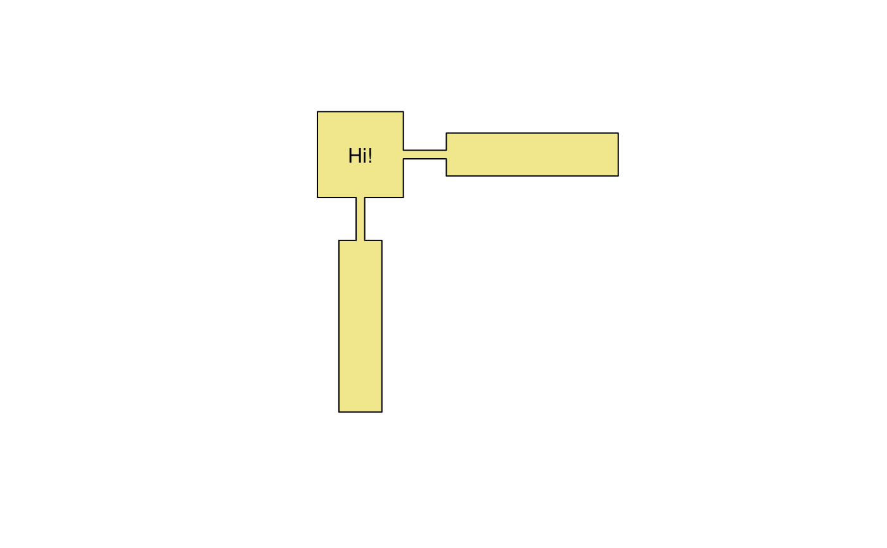
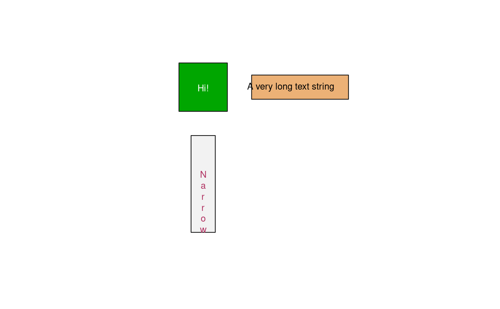
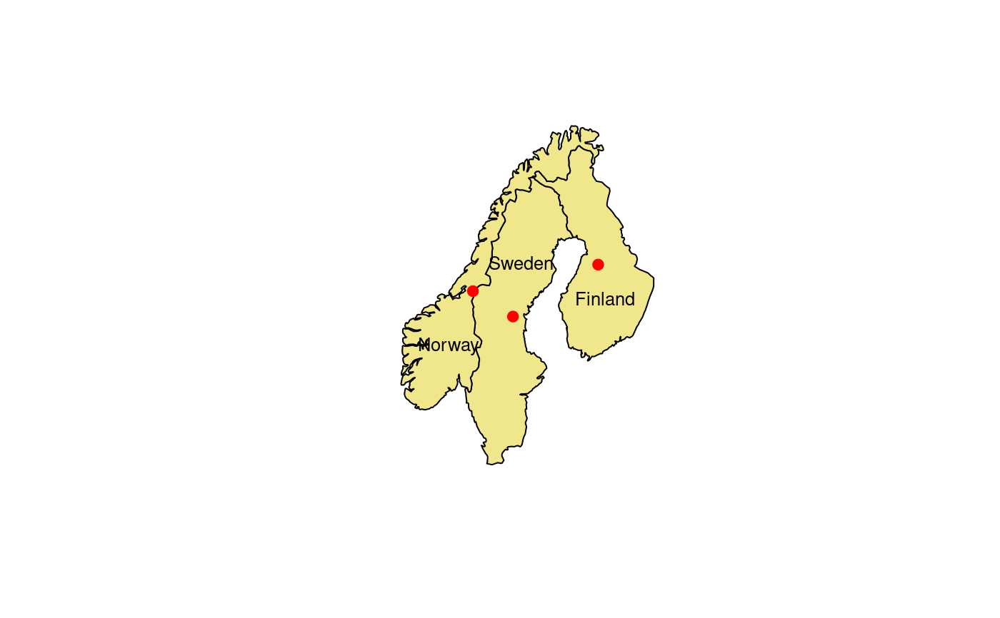

labelpt.RdCompute optimal positions for placing labels inside polygons, and optionally plot the labels. Various algorithms for finding the ‘optimal’ label positions are supported.
polygonsLabel(pols, labels = NULL, method = c("maxdist", "buffer", "centroid", "random", "inpolygon")[1], gridpoints = 60, polypart = c("all", "largest")[1], cex = 1, doPlot = TRUE, ...)
| pols | Object of class, or deriving from, |
|---|---|
| labels | Character vector of labels. Will be recycled to have
the same number of elements as the number of polygons in |
| method | The method(s) to use when finding label positions.
Will be recycled. Valid methods are |
| gridpoints | Number of grid points to use for the initial grid search
in the |
| polypart | Should |
| cex | Magnification factor for text labels. Is used both when plotting the labels and when calculating the label positions. |
| doPlot | Plot the labels on the current graphics device.
Calls the |
| ... | Further arguments to be passed to |
There are no perfect definitions of ‘optimal’ label positions, but any such position should at least satisfy a few requirements: The label should be positioned wholly inside the polygon. It should also be far from any polygon edges. And, though more difficult to quantify, it should be positioned in the visual centre (or bulk) of the polygon. The algorithms implemented here seems to generally do a very good job of finding optimal (or at least ‘good’) label positions.
The maxdist method is currently the default, and tries to
find the label position with a maximal distance from the polygon edges.
More precisely, it finds a position where the minimal distance of
any point on the (rectangular) label box to the polygon boundary is maximised.
It does this by first trying a grid search, using gridpoints
regular grid points on the polygon, and then doing local optimisation on
the best grid point. The default grid is quite coarse, but usually gives
good results in a short amount of time. But for very complicated
(and narrow) polygons, it may help increasing gridpoints. Note
that while this method gives good results for most natural polygons,
e.g., country outlines, the theoretical optimal position is not
necessarily unique, and this is sometimes seen when applying the method
to regular polygons, like rectangles (see example below), where
the resulting position may differ much from what one would judge to
be the visual centre of the polygon.
The buffer method works by shrinking the polygon (using
negative buffering) until the convex hull of the shrunken polygon
can fit wholly inside the original polygon. The label position is
then taken as the centroid of the shrunken polygon. This method
usually gives excellent results, is surprisingly fast, and seems
to capture the ‘visual centre’ idea of an optimal label position well.
However, it does not guarantee that the label can fit wholly inside the
polygon. (However, if it does not fit, there are usually no other
better position either.)
The centroid method simply returns the centroid of each polygon.
Note that although this is the geometrical/mathematical centre of
the polygon, it may actually be positioned outside the polygon.
For regular polygons (rectangles, hexagons), it gives perfect results.
Internally, this method uses the coordinates function.
There are three reasons this method is supported:
To make it easy to find the centroid of the
largest polygon part of a polygon (using the polypart
argument), to make it easy to use the centroid algorithm
along with other algorithms (using the vector nature of the
method argument), and for completeness.
The random method returns a random position guaranteed
to be inside the polygon. This will rarely be an optimal label
position!
The inpolygon method finds an arbitrary position in the polygon.
This position is usually quite similar to the centroid, but is
guaranteed the be inside the polygon. Internally, the method uses
the gPointOnSurface function.
Note that both the labels, method and polypart
arguments are vectors, so it’s possible to use different options for each
polygon in the pols object.
A two-colum matrix is returned, with each row
containing the horizontal and vertical coordinates
for the corresponding polygon. If doPlot is TRUE
(the default), the labels are also plotted on the current
graphics device, with the given value of cex
(font size scaling).
The buffer method was inspired by
(but is slightly different from) the algorithm described
in the paper Using Shape Analyses for Placement of Polygon Labels
by Hoseok Kang and Shoreh Elhami, available at
http://training.esri.com/bibliography/index.cfm?event=general.recordDetail&ID=13608
.
# Simple example with a single polygon x = c(0, 1.8, 1.8, 1, 1, 3, 3, 2.2, 2.2, 4, 4, 6, 6, 14, 14, 6, 6, 4, 4, 0, 0) y = c(0, 0, -2, -2, -10, -10, -2, -2, 0, 0, 1.8, 1.8, 1, 1, 3, 3, 2.2, 2.2, 4, 4, 0) xy = data.frame(x,y) library(sp) xy.sp = SpatialPolygons(list(Polygons(list(Polygon(xy)), ID = "test"))) plot(xy.sp, col = "khaki")polygonsLabel(xy.sp, "Hi!")#> [,1] [,2] #> [1,] 2.001006 1.962585# Example with multiple polygons, text labels and colours x1 = c(0, 4, 4, 0, 0) y1 = c(0, 0, 4, 4, 0) x2 = c(1, 1, 3, 3, 1) y2 = c(-2, -10, -10, -2, -2) x3 = c(6, 14, 14, 6, 6) y3 = c(1, 1, 3, 3, 1) xy.sp = SpatialPolygons(list( Polygons(list(Polygon(cbind(x1,y1))), ID = "test1"), # box Polygons(list(Polygon(cbind(x3,y3))), ID = "test3"), # wide Polygons(list(Polygon(cbind(x2,y2))), ID = "test2") # high )) plot(xy.sp, col=terrain.colors(3))labels=c("Hi!", "A very long text string", "N\na\nr\nr\no\nw") # Note that the label for the tall and narrow box is # not necessarily centred vertically in the box. # The reason is that method="maxdist" minimises the # maximum distance from the label box to the surrounding # polygon, and this distance is not changed by moving # the label vertically, as long the vertical distance # to the polygon boundary is less than the horizontal # distance. For regular polygons like this, the other # label positions (e.g., method="buffer") work better. polygonsLabel(xy.sp, labels, cex=.8, col = c('white', 'black', 'maroon'))#> [,1] [,2] #> [1,] 1.999438 1.945393 #> [2,] 9.218740 2.000838 #> [3,] 2.000552 -7.478637# \dontrun{ ## Example showing how bad the centroid ## position can be on real maps. # Needed libraries if (require(maps) && require(maptools) && require(rgdal)) { # Load map data and convert to spatial object nmap = map("world", c("Norway", "Sweden", "Finland"), exact = TRUE, fill = TRUE, col = "transparent", plot = FALSE) nmap.pol = map2SpatialPolygons(nmap, IDs = nmap$names, proj4string = CRS("+init=epsg:4326")) nmap.pol = spTransform(nmap.pol, CRS("+init=epsg:3035")) # Plot map, centroid positions (red dots) and optimal # label positions using the ‘buffer’ method. plot(nmap.pol, col = "khaki") nmap.centroids = polygonsLabel(nmap.pol, names(nmap.pol), method = "centroid", doPlot = FALSE) points(nmap.centroids, col = "red", pch=19) polygonsLabel(nmap.pol, names(nmap.pol), method = "buffer", cex=.8) }#>#> [,1] [,2] #> [1,] 5140012 4480300 #> [2,] 4299762 4221980 #> [3,] 4689392 4672205# }